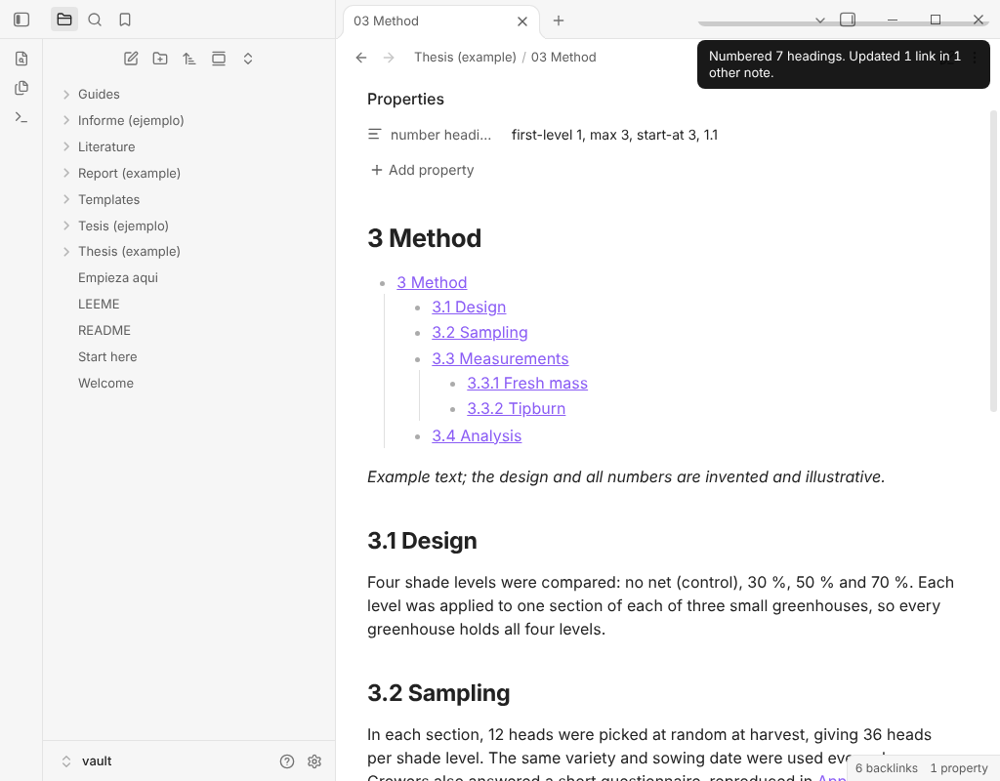

Bóveda de plantillas para Obsidian
Thesis and Report Vault
Escribe una tesis, un trabajo académico o un informe técnico en capítulos numerados, con plantillas, fichas de lectura y un ejemplo completo ya montados. Funciona con el plugin gratuito Section Numbering.

Qué es y para quién
Thesis and Report Vault es una bóveda de Obsidian, no un plugin. Da a estudiantes, investigadores e ingenieros una estructura tediosa de montar: un manifiesto de tesis, plantillas de capítulo y de anexo, un informe de una sola nota al estilo de una norma, y plantillas para fichas de lectura y tutorías.
Está pensada para el plugin gratuito Section Numbering, que numera los títulos (1, 1.1, 1.1.1) y mantiene un índice al día. Los ejemplos vienen en español y en inglés.
Qué incluye
- PlantillasCapítulo de tesis, anexo, informe, ficha de lectura y tutoría, en español y en inglés.
- Un ejemplo de tesis completoUna tesis corta original con resumen, introducción, revisión de la literatura, método, resultados, discusión, conclusión, referencias y dos anexos, numerada con el plugin gratuito. La versión en inglés va a su lado. Los datos y las referencias de los ejemplos son ficticios y están marcados como tales.
- Un ejemplo de informe técnicoUn informe de una sola nota con alcance, referencias, términos, requisitos y un anexo, en español y en inglés.
- Fichas de lecturaDos fichas de ejemplo con los campos por rellenar: autores, año, fuente, ideas clave, citas con página y para qué te servirá.
- Una guía de numeraciónCómo funciona la numeración, qué hace el plugin gratuito, qué añade Pro y qué hacer al reordenar capítulos.
Qué necesitas
- Obsidian y el plugin gratuito Section Numbering del directorio de la comunidad. El pack funciona con el plugin gratuito: los capítulos se numeran y el índice se actualiza sin pagar nada.
- Section Numbering Pro es opcional. Añade numeración de todo el documento, perfiles, referencias cruzadas, numeración de figuras y tablas y exportación. La guía explica dónde ayuda. Nada del pack depende de él.
Qué recibes: un zip con ficheros Markdown e imágenes. Sin código de plugins, sin instalador, sin activación.
Precio
12 USD, pago único.
Pago único. Sin suscripción y sin activación: el pack son ficheros, así que no hay prueba. El precio es el mismo para el contenido en español y en inglés, que vienen en el mismo zip.
Cómo se usa
- Descarga el zip desde el correo del recibo o la página de pago.
- Descomprímelo donde quieras.
- En Obsidian elige «Abrir carpeta como bóveda» y selecciona la carpeta descomprimida.
- Sigue «Empieza aqui»: instala Section Numbering, abre la tesis de ejemplo y luego copia una plantilla y empieza a escribir.
Privacidad
- Solo hay Markdown e imágenes. Sin código, sin telemetría, sin datos personales y sin llamadas de red.
- Los textos de ejemplo son originales y están escritos para este pack. Los autores, los datos y las referencias son ficticios.
- Esta página no usa cookies ni carga nada de otros sitios.
Licencia de uso
Puedes usar las plantillas y la estructura de los ejemplos en tus propias tesis, informes y trabajos. No puedes revender, compartir ni redistribuir el pack en sí.
Reembolsos
Los pagos y los reembolsos los gestiona el servicio de pago. Se aplican las condiciones que verás al comprar.
Preguntas frecuentes
¿Necesito Section Numbering Pro?
No. Los capítulos del pack se numeran con el plugin gratuito.
¿Funciona en el móvil?
Sí, la bóveda es Markdown simple y se abre en Obsidian móvil.
¿Sigue el formato de alguna universidad?
No. Es una estructura académica general. Revisa la normativa de tu institución y ajusta los títulos.
¿Habrá actualizaciones?
Las mejoras del pack estarán disponibles desde la misma página de pago. Consúltala para ver la versión vigente.
¿Gestiona las citas bibliográficas?
No. Trae fichas de lectura y una página de referencias que rellenas tú. No genera bibliografías.